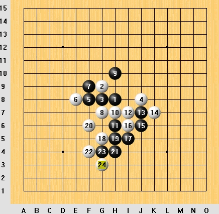
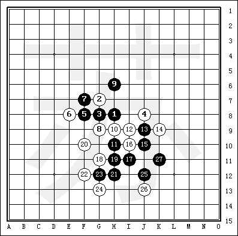
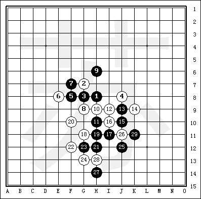
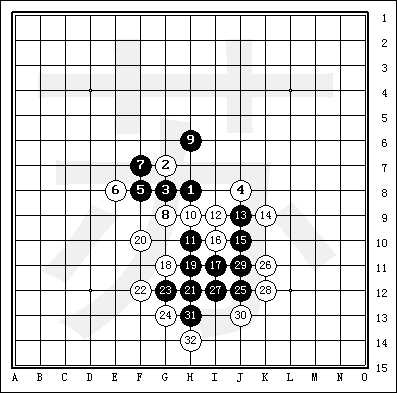

黑先如何胜？
首页
五子棋交流
#1 黑先如何胜？ 作者：飞翔 发表时间：2006-6-9 13:33:58

#2 Re:黑先如何胜？ 作者：小糊涂是我 发表时间：2006-10-9 21:37:09
看看
#3 Re:黑先如何胜？ 作者：ntren 发表时间：2006-10-10 14:19:29

#4 Re:黑先如何胜？ 作者：wybcum 发表时间：2006-10-10 15:13:28
我感觉都是白胜,请问黑怎么胜,
#5 Re:黑先如何胜？ 作者：疯老头 发表时间：2006-10-11 10:45:29
qqqqq
#6 Re:黑先如何胜？ 作者：cjh199 发表时间：2006-10-11 12:36:48
<br><APPLET height=354 hspace=3 width=330 align=center code=Rena.class>
<param name="bgcolor" value="debe9e">
<param name="update" value="f">
<param name="shownum" value="f">
<param name="newpos" value="t">
<param name="editor" value="f">
<param name="data" value="7800670077007a00760075006600870058008800980089008a008b009a009900a900a700a8009600b800b600b700c700ba00ca00ab40">
</APPLET><br>
#7 Re:黑先如何胜？ 作者：cjh199 发表时间：2006-10-11 12:48:01
J4是要点
#8 Re:黑先如何胜？ 作者：cjh199 发表时间：2006-10-11 16:04:48

#9 Re:黑先如何胜？ 作者：天涯游子 发表时间：2006-10-11 18:38:55
这答案是错的
#10 Re:黑先如何胜？ 作者：破网的蜘蛛 发表时间：2006-10-12 15:58:18
顶一下
#11 Re:黑先如何胜？ 作者：天涯游子 发表时间：2006-10-27 10:36:51
什么时候公布答案?
#12 Re:黑先如何胜？ 作者：天上掉个馅饼 发表时间：2006-10-27 19:53:39
声里里
#13 Re:黑先如何胜？ 作者：623193 发表时间：2006-12-7 14:01:13

#14 Re:黑先如何胜？ 作者：110q 发表时间：2006-12-26 23:07:40
j5。
#15 Re:黑先如何胜？ 作者：110q 发表时间：2006-12-26 23:11:24
J5后，白棋只能防在J线，接下来双杀。
#16 Re:黑先如何胜？ 作者：星 发表时间：2007-1-3 12:31:25
看答案
#17 Re:黑先如何胜？ 作者：林动奇 发表时间：2007-1-3 14:23:21
F7可以吗？
#18 Re:黑先如何胜？ 作者：爱我的人 发表时间：2007-2-27 14:45:13
白4太烂了,跑那么远.
#19 Re:黑先如何胜？ 作者：风之海洋 发表时间：2007-3-5 2:22:04
只有25手 下到那里就肯定赢了 是对的
#20 Re:黑先如何胜？ 作者：不拽 发表时间：2007-3-10 20:04:34
答案错的 26手J5
#21 Re:黑先如何胜？ 作者：休闲号 发表时间：2007-4-12 11:02:24
有一个F7影响着。下J4好像胜不了。
#22 Re:Re:黑先如何胜？ 作者：友善 发表时间：2007-4-22 1:48:36
错了! 白可以连续冲四,反了
#23 Re:黑先如何胜？ 作者：友善 发表时间：2007-4-22 2:27:55
解法一:25.J5 26.J3 27.K5 28.L5 29.J4 30.F7 31.E7 32.F3 33.F5 34.H3 35.I3 36.E3 37.D3 38.D2 39.C1 40.L6 41.K3 42.L2 43.K4 44.I4 45.K2 46.K6
解法二:25.J5 26.J4 27.K6 28.F7 29.E7 30.F3 31.F5 32.I8 33.M8 34.I9 35.I10 36.L6 37.M5 38.L7 39.H3 40.H2 41.I2 42.E6
#24 Re:黑先如何胜？ 作者：梦婷 发表时间：2007-4-22 17:25:06
25手在J5
#25 Re:Re:黑先如何胜？ 作者：阿浪lana 发表时间：2007-4-23 19:09:38
j5
#26 Re:黑先如何胜？ 作者：阿浪lana 发表时间：2007-4-23 19:10:34
J5
#27 Re:黑先如何胜？ 作者：jackal 发表时间：2007-4-26 16:46:28
25手走J5的确是一步好棋,
但不一定黑一定会胜.....
我个人学得..哈...
#28 Re:黑先如何胜？ 作者：jackal 发表时间：2007-4-26 16:46:38
25手走J5的确是一步好棋,
但不一定黑一定会胜.....
我个人学得..哈...